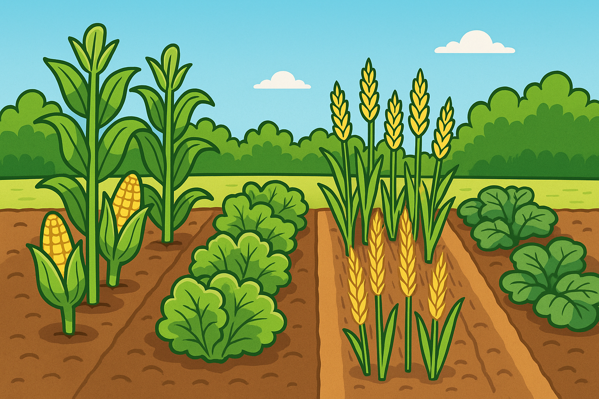

Welcome, Little Farmer! Ready to grow something awesome? Let's plant, water, and watch
our crops come alive!🌱🌾
Befor we dive in, we need to know a little more about crops
What are crops?
Crops are plants that we grow to eat, wear, or use in other ways. They can be fruits, vegetables, grains,
or even flowers! Each crop has its own special needs to grow big and strong. Examplesof crops are: Maize (Corn), Carrots, Tomatoes, Rice, Potatoes And So Much More. They help us stay strong, healthy, and never hungry like a lion in a zoo!

What is Crop Farming?
Crop farming is the practice of cultivating plants for food, fiber, and
other products. It involves preparing
the soil for planting, sowing seeds nurturing the plants as they grow, and
harvesting crops when they are ready
Importance of Crop Farming
Food Production: Provides the primary source of food for humans and animals.
Economic Contribution: Contributes significantly to the economy through the sale of agricultural products.
Biodiversity: Supports a wide range of plant species and promotes biodiversity in ecosystems.
Sustainability: Can be practiced sustainably to ensure long-term food security and environmental health.
Types of Crops
Food Crops: These are grown for human consumption, such as rice, wheat, and vegetables.
Cash Crops:These are grown and then used by the farmer to make profit
Fiber Crops: These are grown for their fibers, such as cotton and flax.
Ornamental Crops:These are grown in order to add beauty to our environment
Medicinal Crops: These are grown for their medicinal properties, such as herbs and spices.
How Do I Start Crop Farming?
Starting crop farming is easy and fun. Just a little bit of hardwork and dedication and you're ready to grow.
Here are easy and fun ways you can start your own crop farm:
Choose Your Crop: Decide what you want to grow based on your interests and the climate in your area.
Prepare the Soil: Clear the land, remove weeds, and till the soil to make it ready for planting.
Sow Seeds: Plant the seeds at the right depth and spacing according to the crop type.
Water and Care: Regularly water the plants, remove weeds, and protect them from pests.
Harvest: When the crops are ripe, carefully harvest them to enjoy or sell!
What Crops Need to Grow
Every crop is like a baby — it needs care! Crops need a few important things to grow healthy and strong:
Sunlight – Crops love the sun! No sun, no fun!
Water – Just like you need water, so do plants. Don’t drown them though!
Healthy Soil – Good soil is like yummy cereal for crops. Full of nutrients!
Air – Yes, crops “breathe” too, just like you (but without the drama)!
Care – A little love goes a long way. Talk to your plants, they love it!
Fun Facts About Crop Farming
Did you know that some crops can grow in just a few weeks, while others take months?
Farmers use special tools like plows and tractors to help them plant and care for their crops.
Crop rotation is a technique where farmers change the type of crop they grow in a field each year to keep the soil healthy.
Some crops, like corn, can grow taller than a giraffe!
Farmers often work early in the morning or late in the evening to avoid the heat of the day.
🚜 Tools Farmers Use
Farmers have cool tools to help them grow crops. Here are some of the most common ones:
Shovel: For digging and planting seeds.
Hoe: To break up soil and remove weeds.
Rake: To level the soil and remove debris.
Watering Can: To give plants a drink when they are thirsty.
Tractor: A big machine that helps plow fields and carry heavy loads.
Seed Drill: A tool that plants seeds in rows at the right depth.
Sprayer: To apply water or fertilizers to crops.
Challenges in Crop Farming
Crop farming can be tough sometimes. Here are some challenges farmers face:
Weather: Too much rain or not enough can hurt crops.
Pests: Bugs and animals can eat crops if not controlled.
Diseases: Plants can get sick, just like people!
Soil Quality: Poor soil can lead to weak plants.
Market Prices: Sometimes, farmers don’t get paid enough for their hard work.
How Can We Help Farmers?
We can all help farmers and crops in many ways:
Buy Local: Support local farmers by buying fresh produce from farmers' markets.
Reduce Food Waste: Use what you buy and compost scraps to help the soil.
Learn: Educate yourself and others about the importance of crops and farming.
Volunteer: Help out at local farms or community gardens.
Advocate: Support policies that help farmers and sustainable farming practices.
SUMMARY
Crop farming is a fun and important way to grow food and other products that we use every day. By learning about crops and how to care for them, we can help feed the world and take care of our planet. So, put on your farmer's hat, grab your watering can, and let's get growing!